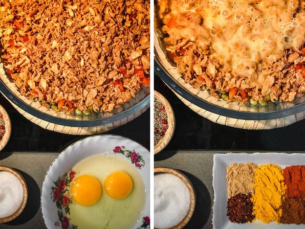

Koo Koo
Category:Persian food
This recipe is adequate for 4 people.
Ingredients for cooking:
- 600 gr potatoes, cooked
- 1/2 red bell pepper, diced
- 1/2 cup crispy fried onion
- 2 large eggs
- 1 cup mung beans, cooked
- 1 teaspoon turmeric powder ginger powder
- 1/2 teaspoon paprika
- 1/2 teaspoon masala
- 1/4 teaspoon pepper
- 1/2 teaspoon cayenne pepper
- 1/2 teaspoon salt


Cooking Directions:
- (1)Combine shredded potatoes, cooked mung beans, and diced bell pepper in a bowl.
- (2)Mix in fried onion, spices, eggs, salt, and pepper.
- (3)Heat oil in a nonstick pan over medium heat.
- (4)Shape the mixture into small patties, coat with breadcrumbs, and fry in the pan until golden brown on both sides.
- (5)Add the mashed beef and saffron to the pot and stir until well blended.
- (6)Drain excess oil on paper towels before serving.
For more information, below links are sugessted: